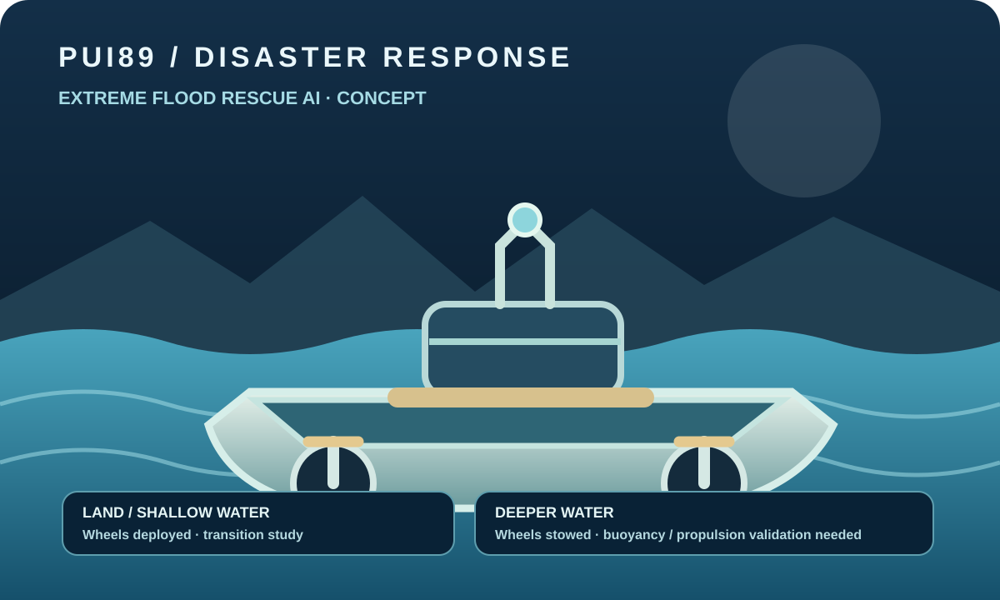

Disrupted access
Flooding can isolate communities, block roads and damage communications.
A developing AI decision-support concept for flood situational awareness, hazard mapping and human-supervised assistance planning, with proposed land-and-water rescue platforms.

Software checks and scenario/report tooling are under development. The 0–15 m flood range is a scenario/design target only. No validated flood-depth operating envelope, navigation, buoyancy, payload, rescue or field performance is claimed.
Flooding can isolate communities, block roads and damage communications.
Current, debris, water depth, visibility and structural damage can change quickly.
Technology must support trained rescue teams, not create new hazards or replace their judgement.
Combine permitted visual observations, map context and environmental inputs; track freshness and uncertainty; produce reviewable hazard summaries and assistance priorities for trained responders.
Explore suitable rescue-platform concepts for different flood environments. Detailed configurations and engineering parameters are not published; physical performance remains unvalidated.
The project explores AI-assisted flood-scene understanding, hazard awareness, route proposals and evidence reporting for trained responders. Specific platform configurations, operating envelopes and unreleased engineering parameters are intentionally not included in this public overview.
Validation boundary: simulations support software research only. Physical navigation, flotation, water resistance, carrying capacity and rescue performance have not been validated.
This project is still in development. It is not a finished product.
Use ISO 12100 as a machinery risk-assessment reference where applicable and the NIST AI Risk Management Framework for AI risk management. Applicable marine, electrical, radio, occupational and emergency-response requirements must be identified by qualified specialists for the actual platform and jurisdiction.
These are references, not certification. No person or animal should be carried in an experimental platform before independent engineering review and staged safety validation.
Emergency responders, hydrology and civil engineers, marine engineers, robotics specialists and relevant industry operators can help define realistic scenarios and safety gates.
Discuss support or collaborationOpen project repository ↗Scan to open this exact English project page. The QR code is a static image hosted by PUI89; it does not use a redirect or paid QR service.
Last reviewed: 8 November 2026 · Review period: November 2026
Coloured markers identify improvement dimensions, not certification or completed implementation.
Status: ● Framework guidance published · ● Project evidence review pending · ● Unverified / not assessed
Recommendations only; maturity changes require repository evidence, repeatable tests or controlled validation. Software tests do not establish physical product safety or certification.
PUI89 ENGINEERING STATUS
Project Maturity: Formal stage assessment pending. No maturity score or completion percentage is claimed.
These indicators are intentionally unscored until a dated review links each assessment to verifiable repository evidence, reproducible tests and applicable validation. A coloured marker identifies the dimension; it does not represent a score.
PUI89 EVIDENCE STANDARD
Flood Rescue AI — Not yet scored
Completed evidence-backed strength reviews: 0. This is a review-record count, not a statement that no development or testing has occurred.
Assessment weights: Technical capability 25 · Testing and evidence 25 · Safety and reliability 20 · Engineering maturity 15 · Documentation and reproducibility 10 · Real-world validation 5.
Scores will appear only after a dated review records its scope, version, evidence, findings, limitations and next actions. Concepts, planned features and unrun tests receive no credit. Simulation results do not prove physical-world performance.
Explore the technical research record for LiDAR terrain indicators, temporal video evidence, segmentation evaluation and relative-depth model candidates. Each item is labelled by its actual review status; none establishes a calibrated flood-depth measurement or safe rescue route.